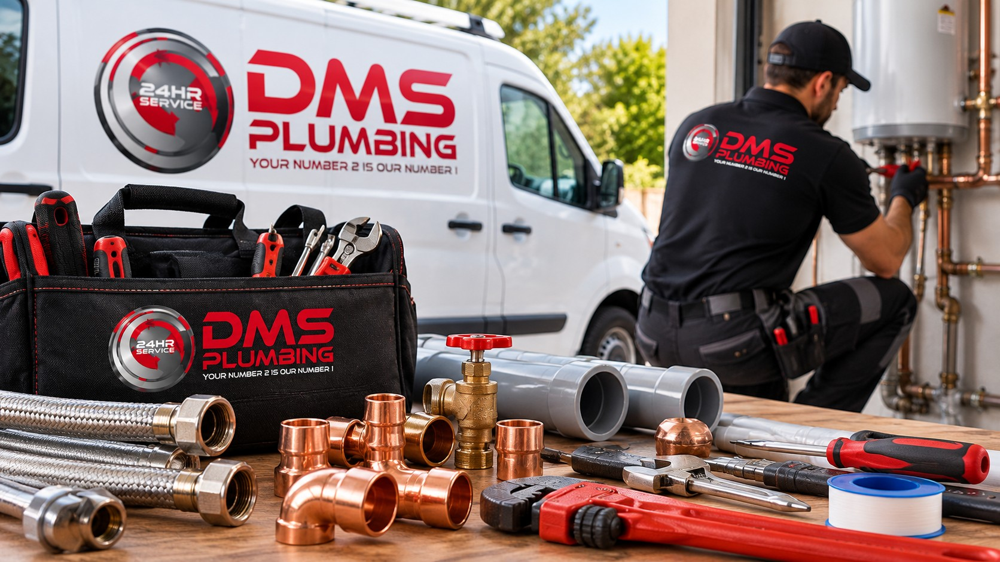

Our Plumbing Services
We offer plumbing services for homes and businesses in Johannesburg and surrounding areas. Find the service you need below.

Find the Service You Need
Search for a plumbing problem or choose a category to find the right service.
Loading services...
Sorry, no matching services were found. Try another search or select All Services.
Need Emergency Plumbing Assistance?
Plumbing problems can happen at any time. We offer emergency plumbing services 24 hours a day, 7 days a week.
Emergency Contact: 011 043 5370
Call Now